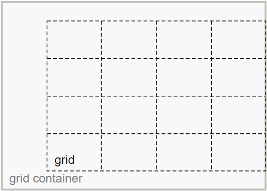

Opdracht 6
Wat is het verschil tussen justify/align/place-items en
justify/align/place-content?
Grid Container
The grid container is the overall container for the grid and grid items.
It establishes the grid formatting context (as opposed to another formatting context, such as flex or block).
Grid
The grid is a group of intersecting vertical and horizontal lines that divides the grid container’s space into grid areas,
which are boxes that contain grid items.
Grid Items
Grid items are boxes in a grid container that represent in-flow content (i.e., content that is not absolutely positioned).

The justify-content and align-content properties align the grid.
The justify-self, justify-items, align-self and align-items properties align the grid items.